ベーカリー PREGO（プレーゴ）
ベーカリー・埼玉県吉川市／制作日：2026-08-05

キッチンカー Hero's（ヒーローズ）
中華料理・キッチンカー／埼玉県吉川市／制作日：2026-08-05
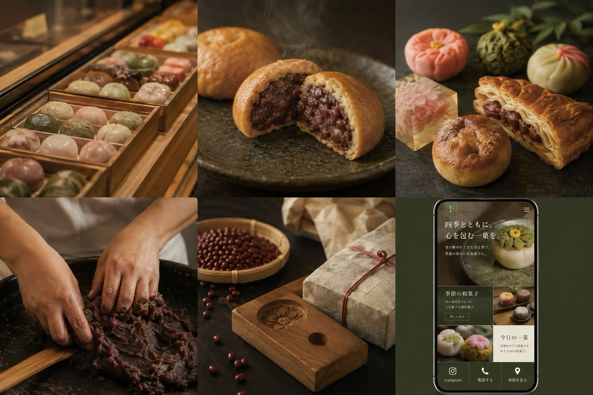
和菓子司まるしん
和菓子店・埼玉県吉川市／制作日：2026-08-06
MooNnail（ムーンネイル）
ネイルサロン・埼玉県吉川市／制作日：2026-08-06
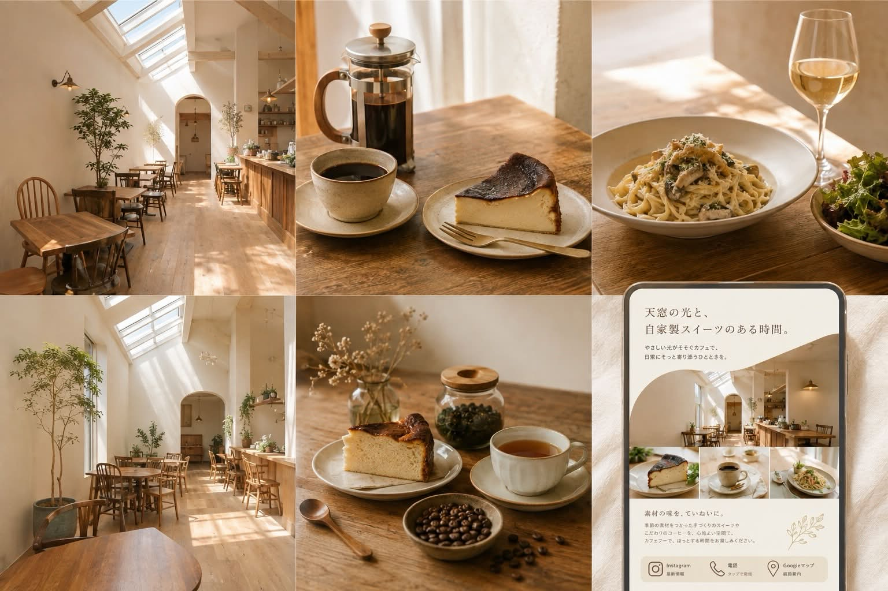
Cafe feu（カフェ フー）
カフェ・埼玉県吉川市美南／制作日：2026-08-06
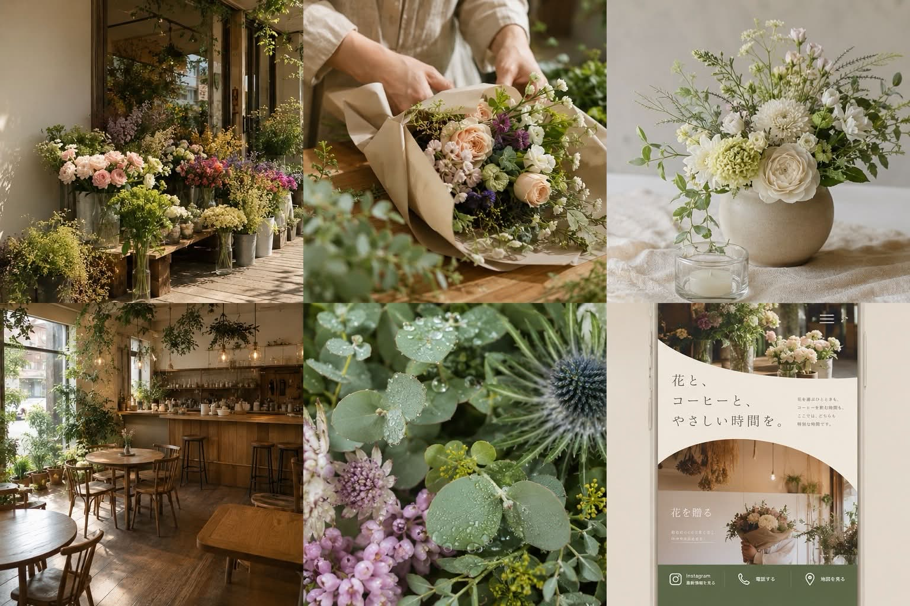
花やさん
生花店・カフェ併設／埼玉県吉川市／制作日：2026-08-06
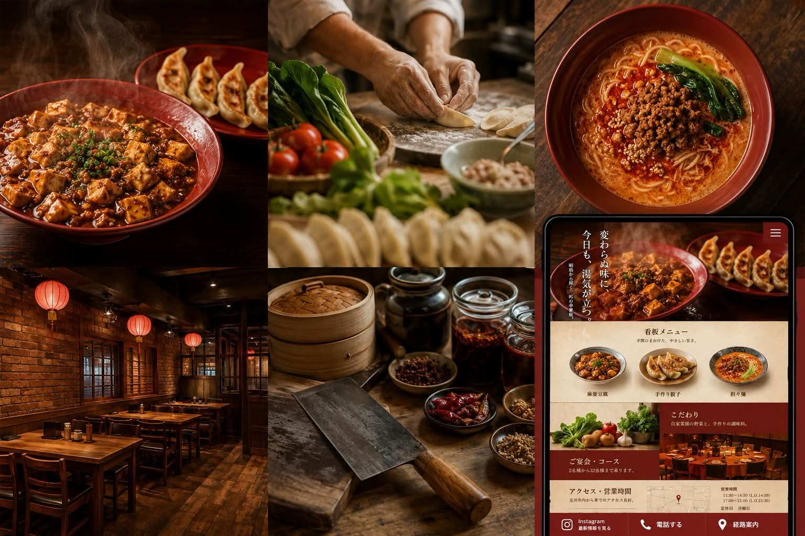
中華処 萬万亭
中華料理店・埼玉県吉川市／制作日：2026-08-07
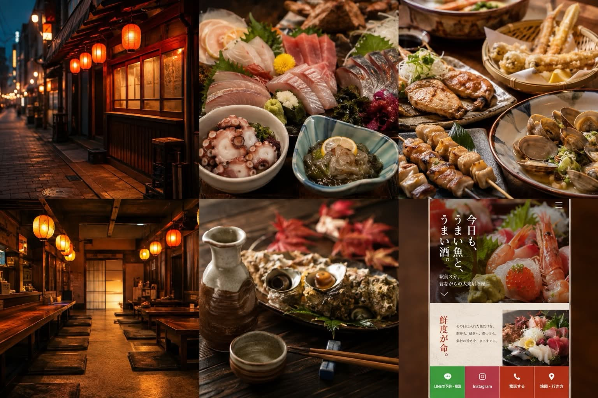
居酒屋やっちゃば（吉川店）
居酒屋・海鮮料理／埼玉県吉川市／制作日：2026-08-07
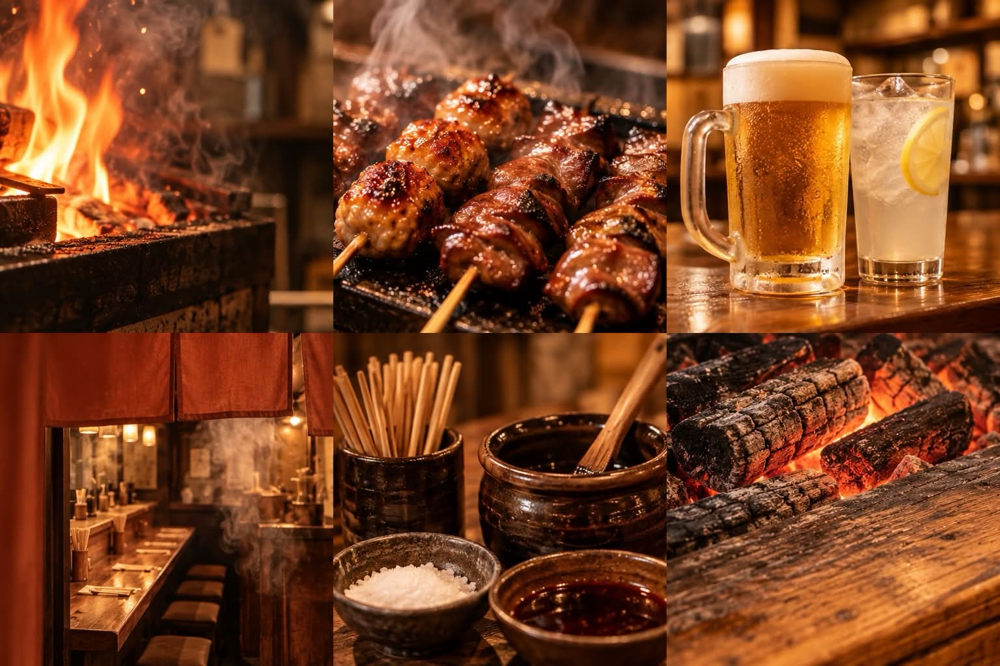
やきとり きっちょう
やきとり・居酒屋（埼玉県吉川市）／制作日：2026-08-07
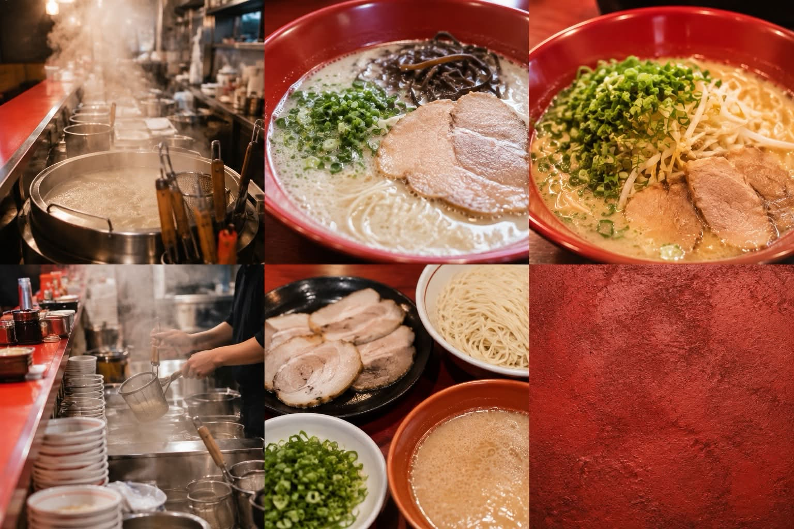
博多ラーメン 洋ちゃん食堂
ラーメン店（博多とんこつ）・埼玉県吉川市／制作日：2026-08-07
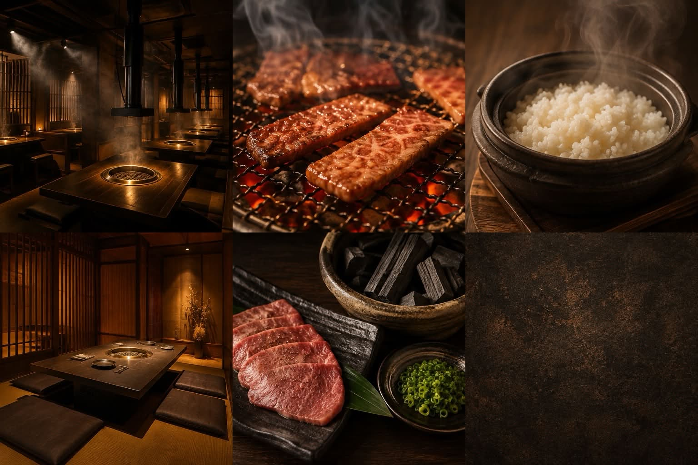
肉のフジヤマ
焼肉店・埼玉県吉川市／制作日：2026-08-07
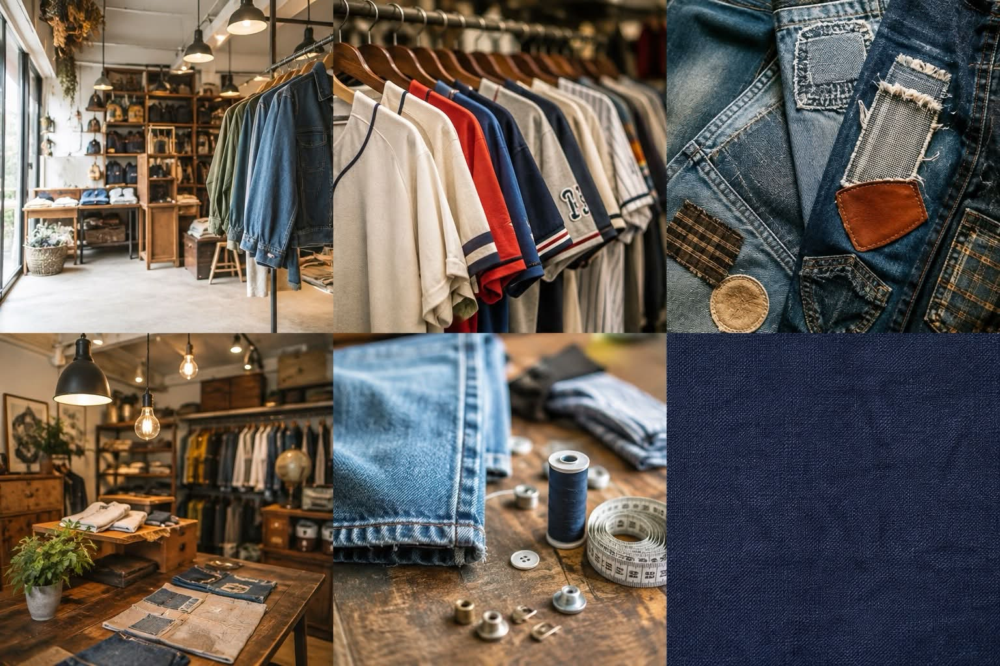
古着屋 SATO -サト-
古着店・埼玉県吉川市（ヴィンテージ古着・リメイク）／制作日：2026-08-09
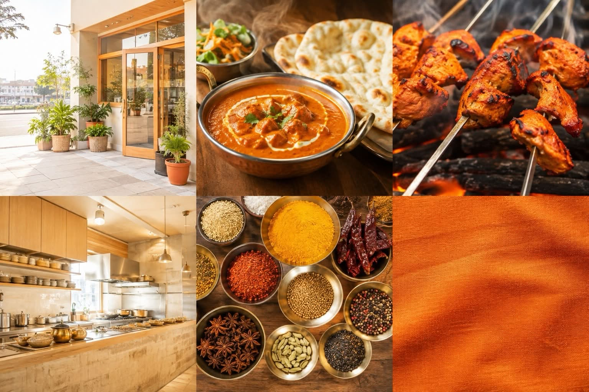
JAHAN インド・ネパール料理（ジャーハン）
インド・ネパール料理店・埼玉県吉川市／制作日：2026-08-09
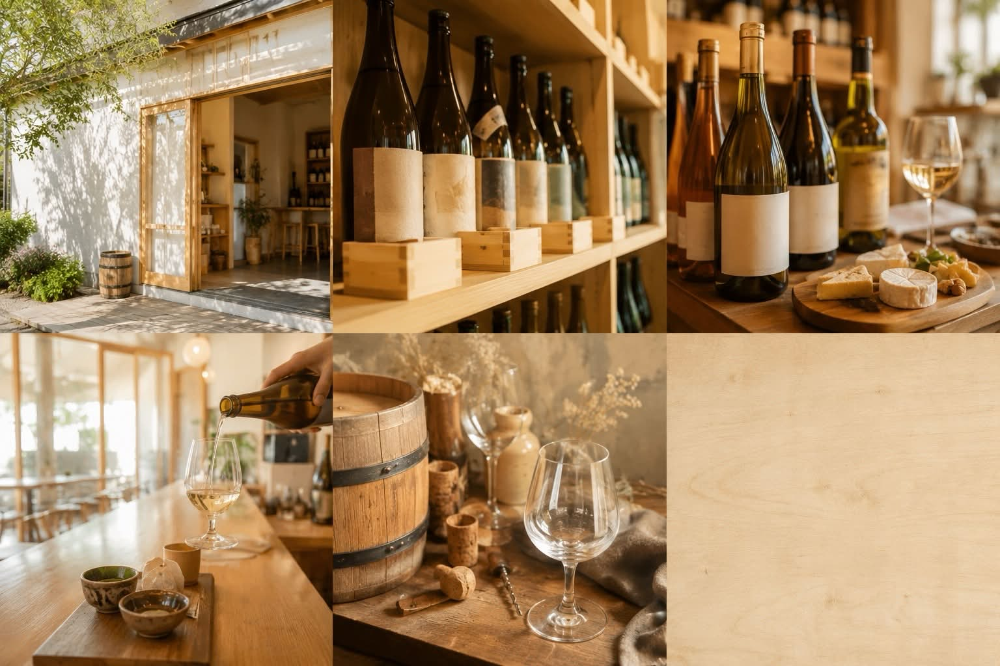
酒乃おはこ屋
酒販店（地酒・自然派ワイン）・埼玉県吉川市／制作日：2026-08-09
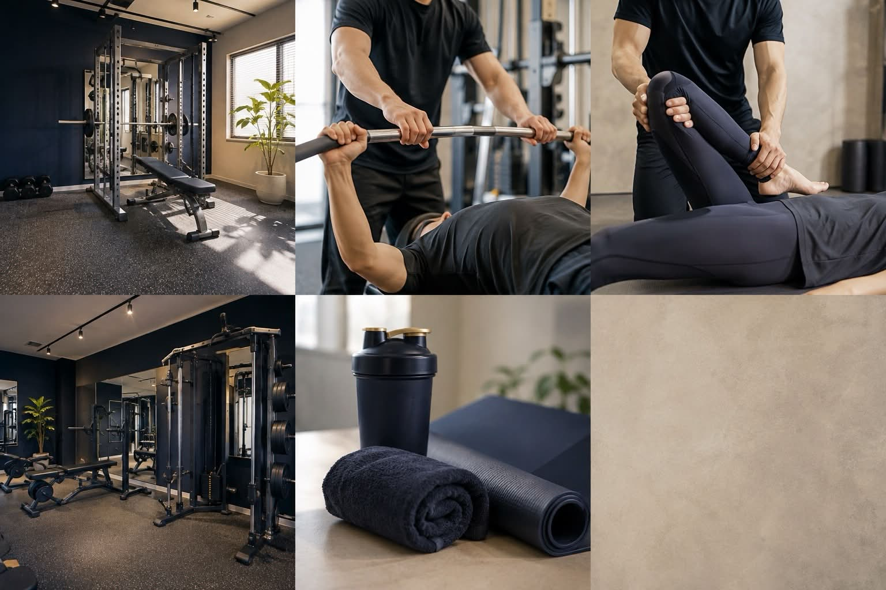
ALL GRANT
パーソナルトレーニングジム・埼玉県吉川市／制作日：2026-08-09
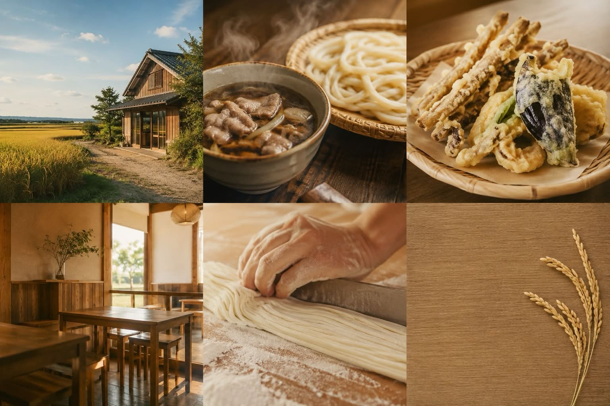
製麺練場 風布うどん
うどん専門店・埼玉県吉川市／制作日：2026-08-09
pommery（ポメリー）Nail & Lash
ネイル・まつげサロン／埼玉県吉川市美南／制作日：2026-08-10
solo design hair（ソロデザイン）
美容室・埼玉県吉川市美南／制作日：2026-08-10
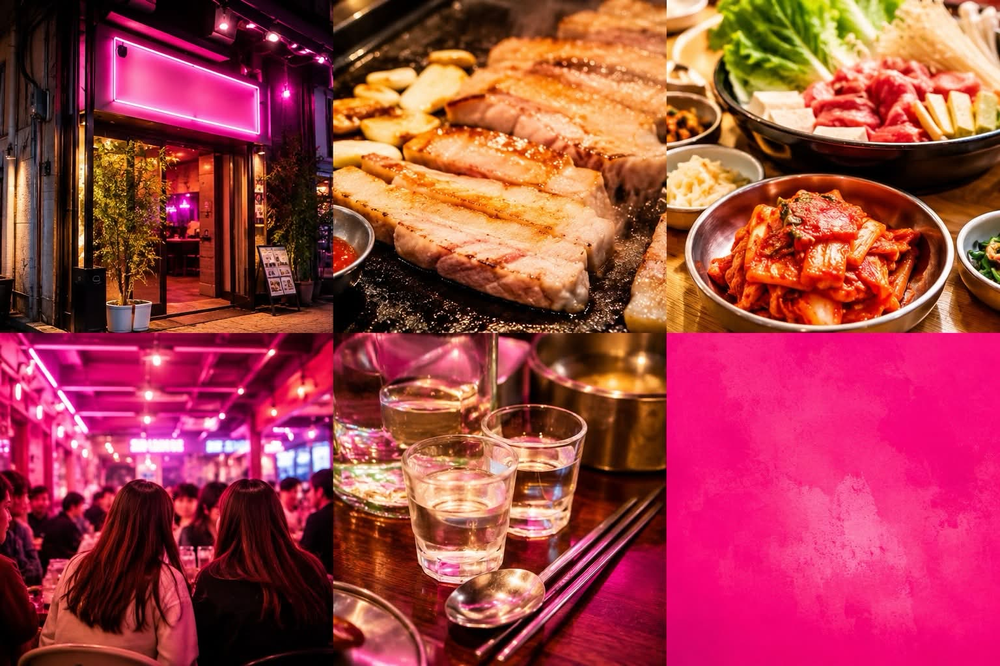
韓国居酒屋 韓謝亭（駅前かんしゃ）
韓国料理居酒屋・埼玉県吉川市／制作日：2026-08-10
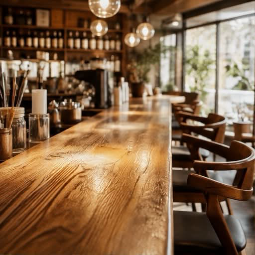
MACHI CAFE LOUNGE
カフェ＆バー・埼玉県吉川市美南／制作日：2026-08-11